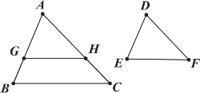

Similarity
The idea of “scaling” geometric objects is ubiquitous in our everyday experience. When you draw a map or enlarge a photo or instruct your computer to use a different font size, you are creating a new geometric object that has the “same shape” as the old one but has all of its parts reduced or enlarged in size proportionally. In geometry, roughly speaking, two figures that have the same shape but not necessarily the same size are said to be similar to each other.
Definition 1. VI Similar rectilinear figures are such as have their angles severally equal and the sides about the equal angles proportional. □
From Definition 1, we have triangles △ABC and △A'B'C' are similar if ∠A = ∠A', ∠B = ∠B', ∠C = ∠C' and
We write △ABC ∼ △A'B'C'
Here is our official definition of similarity. If 𝒫1 and 𝒫2 are polygons, we say they are similar polygons if there is a correspondence between their vertices such that consecutive vertices correspond to consecutive vertices, all pairs of corresponding interior angle mea- sures are equal, and all pairs of corresponding side lengths are proportional. In particular, congruent polygons are always similar. The notation 𝒫1 ~ 𝒫2 means that 𝒫1 is similar to 𝒫2. When we name the polygons by listing their vertices, the order of the vertices indicates the correspondence, just as in the notation for congruence.
Proposition 4. VI [AAA]. ̃Equiangular triangles are similar
Proof. Consider triangles △ABC and △DEF. We will assume that ∠A = ∠D, ∠B = ∠E and ∠C = ∠F. We wish to show that
If AB = DE, then by ASA [I.26] the triangles are congruent, and hence, similar (every ratio is 1).
If AB ≠ DE, then WLOG, assume AB > DE. Construct G on AB such that AG = DE [I.3]. Draw a line through G that is parallel to BC [I.31]. Let the intersection of this line with AC be H [Pasch’s Axiom]. By I.29, ∠AGH = ∠ABC. Since ∠ABC = ∠DEF by hypothesis, then ∠AGH = ∠DEF. Hence, by ASA [I.26] we have △AGH ≅ △DEF, and thus, AH = DF. Since GH ∥ BC, by VI.2 we have
GB/AG = HC/AH
Adding 1 to both sides of the equation gives
GB/AG + AG/AG = HC/AH + AH/AH
Simplifying produces
AB/AG = AC/AH
By substitution, we have
AB/DE = AC/DF
A similar argument produces
AC/DF = BC/EF □
The fact that two pairs of equal angles suffice for similar triangles is an immediate corollary to AAA.
Corollary. [AA] If two triangles have two pairs of equal angles, then they are similar.
Proof. By I.32, the third pair of angles are also equal. Thus, we may apply AAA. □
We end this section with the remaining similarity schemes, SSS and SAS, and leave their updated proofs as an exercise for the reader.
Proposition VI.5 [SSS]. If two triangles have their sides proportional, the triangles will be equiangular and will have those angles equal which the corresponding sides subtend.
Proof. Let ABC, DEF be two triangles having their sides proportional, so that, as AB is to BC, so is DE to EF, as BC is to CA, so is EF to FD, and further, as BA is to AC, so is ED to DF; I say that the triangle ABC is equiangular with the triangle DEF, and they will have those angles equal which the corresponding sides subtend, namely the angle ABC to the angle DEF, the angle BCA to the angle EFD, and further the angle BAC to the angle EDF.
For on the straight line EF, and at the points E, F on it, let there be constructed the angle FEG equal to the angle ABC, and the angle EFG equal to the angle ACB; [I.23] therefore the remaining angle at A is equal to the remaining angle at G. [I.32]
Therefore the triangle ABC is equiangular with the triangle GEF.
Therefore in the triangles ABC, GEF the sides about the equal angles are proportional, and those are corresponding sides which subtend the equal angles; [VI.4] therefore, as AB is to BC, so is GE to EF.
But, as AB is to BC, so by hypothesis is DE to EF; therefore, as DE is to EF, so is GE to EF. [V.11]
Therefore each of the straight lines DE, GE has the same ratio to EF; therefore DE is equal to GE. [V.9] For the same reason DF is also equal to GF.
Since then DE is equal to EG, and EF is common, the two sides DE, EF are equal to the two sides GE, EF; and the base DF is equal to the base FG; therefore the angle DEF is equal to the angle GEF, [I.8] and the triangle DEF is equal to the triangle GEF, and the remaining angles are equal to the remaining angles, namely those which the equal sides subtend. [I.4]
Therefore the angle DFE is also equal to the angle GFE, and the angle EDF to the angle EGF.
And, since the angle FED is equal to the angle GEF, while the angle GEF is equal to the angle ABC, therefore the angle ABC is also equal to the angle DEF.
For the same reason the angle ACB is also equal to the angle DFE, and further, the angle at A to the angle at D; therefore the triangle ABC is equiangular with the triangle DEF. □
Proposition 6.VI [SAS]. If two triangles have one angle equal to one angle and the sides about the equal angles proportional, the triangles will be equiangular and will have those angles equal which the corresponding sides subtend.
Proof. Let ABC, DEF be two triangles having one angle BAC equal to one angle EDF and the sides about the equal angles proportional, so that, as BA is to AC, so is ED to DF; I say that the triangle ABC is equiangular with the triangle DEF, and will have the angle ABC equal to the angle DEF, and the angle ACB to the angle DFE.
For on the straight line DF, and at the points D, F on it, let there be constructed the angle FDG equal to either of the angles BAC, EDF, and the angle DFG equal to the angle ACB; [I.23] therefore the remaining angle at B is equal to the remaining angle at G. [I.32]
Therefore the triangle ABC is equiangular with the triangle DGF.
Therefore, proportionally, as BA is to AC, so is GD to DF. [VI.4] But, by hypothesis, as BA is to AC, so also is ED to DF; therefore also, as ED is to DF, so is GD to DF. [V.11]
Therefore ED is equal to DG; [V.9] and DF is common; therefore the two sides ED, DF are equal to the two sides GD, DF; and the angle EDF is equal to the angle GDF; therefore the base EF is equal to the base GF, and the triangle DEF is equal to the triangle DGF, and the remaining angles will be equal to the remaining angles, namely those which the equal sides subtend. [I.4]
Therefore the angle DFG is equal to the angle DFE, and the angle DGF to the angle DEF. But the angle DFG is equal to the angle ACB; therefore the angle ACB is also equal to the angle DFE.
And, by hypothesis, the angle BAC is also equal to the angle EDF; therefore the remaining angle at B is also equal to the remaining angle at E; [I.32] therefore the triangle ABC is equiangular with the triangle DEF. □